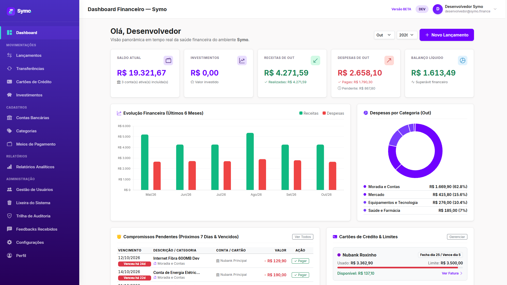
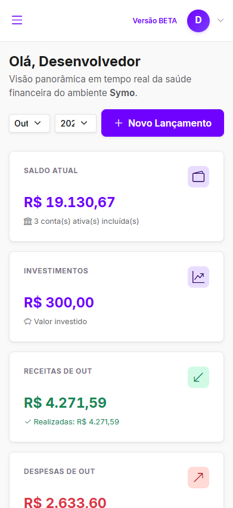

Desenvolvedor de Software focado em interfaces elegantes e arquitetura de ponta a ponta.
Construindo sistemas completos — da experiência de uso e design de interface à modelagem de banco de dados, regras de negócio e deploy.


Symo Finance — Gestão Financeira Autônoma
Plataforma web de gestão financeira pessoal e empresarial leve desenvolvida em PHP 8 com arquitetura MVC própria, sem frameworks pesados, com consistência transacional e design fluído.
Arquitetura MVC & Tipagem Estrita
Front Controller único (`strict_types=1`), roteador HTTP desacoplado e zero lock-in de bibliotecas externas.
Integridade Financeira (ACID)
Operações bancárias atômicas com validação condicional direta no `UPDATE`, impedindo concorrência e saldos inconsistentes.
Trilha de Auditoria com JSON Diff
Registro granular de alterações de dados com comparativo visual visualizando antes vs. depois.
Outros Projetos
Arquitetura de Ponta a Ponta
Construindo pontes sólidas entre interfaces encantadoras e backends altamente confiáveis, resilientes e de fácil manutenção.
Front-end & UX Craft
Design Systems com CSS Design Tokens, HTML5 semântico, layouts responsivos fluidos, micro-interações elegantes e conformidade de acessibilidade (WCAG).
Back-end & Arquitetura
Arquitetura MVC desacoplada em PHP 8 com tipagem estrita (`strict_types=1`), Front Controller único, roteamento HTTP seguro, APIs RESTful e defesa em profundidade (anti-CSRF/XSS/IDOR).
Bancos de Dados & ACID
Modelagem relacional com transações atômicas estritas para integridade financeira, compatibilização com PgBouncer no Neon, conexão segura via SSL e migrações versionadas.
DevOps, Nuvem & Tooling
Execução serverless na Vercel com proxies privados para upload de mídias, workflows de automação com GitHub Actions para status e seeds de banco de dados, e versionamento com Git.
Vamos construir algo memorável juntos?
Disponível para novos projetos de software, oportunidades técnicas e desenvolvimento de ponta a ponta.